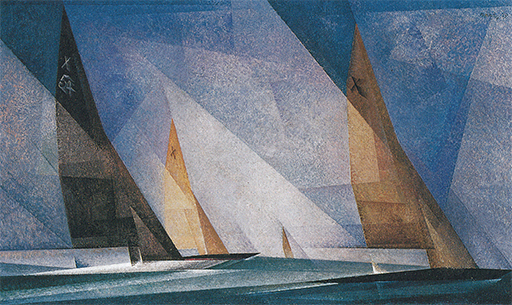
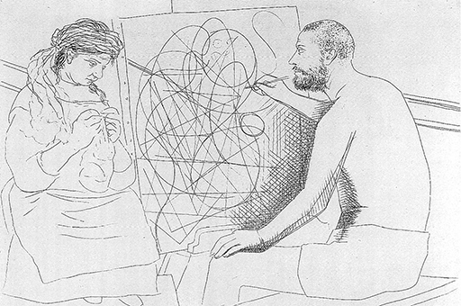

27
ARTE EXPERIMENTAL
Primera mitad del siglo XX
Cuando la gente habla de arte moderno, piensa generalmente en un tipo de arte que ha roto por completo con las tradiciones del pasado y que trata de realizar cosas que jamás hubiera imaginado un artista de otras épocas. A algunos les gusta la idea de progreso y creen que también el arte debe marchar al paso del tiempo. Otros prefieren la frase del «feliz tiempo pasado» y creen que el arte moderno no vale nada. Pero ya hemos visto que la situación es mucho más complicada, y que el arte moderno, del mismo modo que el antiguo, ha surgido como respuesta a ciertos problemas concretos. Los que deploran la ruptura con la tradición tendrían que retroceder más allá de la Revolución francesa de 1789, y pocos son los que creerían que esto fuese posible. Fue entonces, como hemos visto, cuando los artistas empezaron a adquirir conciencia de los estilos y a investigar y emprender nuevos movimientos, que por lo general produjeron un nuevo ismo como grito de batalla. Lo más extraño es que la rama del arte que más había sufrido por la general confusión fuese la que mejor consiguiera triunfar en la creación de un estilo nuevo y permanente. La arquitectura moderna tardó en ser aceptada, pero sus principios se hallan ahora tan firmemente establecidos que pocos serían los que pudieran discutirlos seriamente. Recordemos cómo los tanteos en busca de un nuevo estilo de construcción y decoración condujeron a los experimentos del art nouveau, en los que las nuevas posibilidades técnicas de la construcción con acero podían además combinarse con atrevidas decoraciones (ilustración 349). Pero la arquitectura del siglo XX no nacería de estos ejercicios de inventiva. El futuro pertenecería a los decididos a empezar de nuevo y a desembarazarse de las preocupaciones del estilo o los adornos, fueran viejos o nuevos. En vez de seguir considerando la arquitectura como una de las bellas artes, los arquitectos más jóvenes rechazaron de plano la decoración y se entregaron de nuevo a su trabajo, atacando el fin específico de éste.
Este nuevo criterio se dejó sentir en muchos países, pero en ninguno de un modo tan radical como en Estados Unidos, donde el progreso tecnológico estaba mucho menos frenado por el peso de una tradición. Era evidente la incongruencia de construir rascacielos en Chicago para recubrirlos con decoraciones procedentes de modelos europeos. Pero eran necesarias una mente muy clara y unas convicciones muy sólidas para que un arquitecto persuadiera a sus clientes de que debían aceptar un tipo de vivienda radicalmente heterodoxo. Quien habría de lograr este triunfo sería el estadounidense Frank Lloyd Wright (1869-1959). Él se dio cuenta de que lo importante en una casa eran las habitaciones, y no la fachada; si aquélla era cómoda y estaba bien proyectada por dentro, adaptándose a las necesidades de su propietario, con toda seguridad ofrecería también un aspecto aceptable desde fuera. A nosotros no puede parecernos muy revolucionario este punto de vista, pero lo fue en efecto, pues llevó a Wright a desdeñar todas las consignas establecidas sobre edificación, especialmente la exigencia tradicional de una perfecta simetría. La ilustración 363 muestra una de las primeras casas de campo de Wright, situada en una zona residencial de Chicago, en la que abandonó todas las orlas acostumbradas, las molduras y las cornisas, construyéndola totalmente de acuerdo con su designio. Pero Wright no debe ser considerado un mero ingeniero; él creía en lo que denominó arquitectura orgánica, por la que quiso dar a entender que una casa tenía que derivar de las necesidades humanas y del carácter del lugar en tanto que organismo vivo.
363 Frank Lloyd Wright. 540 Fairoaks Avenue, Oak Park, Illinois, 1902. Casa «falta de estilo».
Es comprensible la desgana con que Wright acogió las exigencias de los ingenieros, tanto más cuanto que tales exigencias empezaban a imponerse en aquellos momentos con gran fuerza y persuasión. Si Morris no se había equivocado al afirmar que las máquinas jamás podrían emular el trabajo del hombre, la solución más lógica era averiguar qué podía hacer la máquina, para así acomodar nuestros proyectos a tales posibilidades.
A algunos les pareció que este principio constituía una ofensa al buen gusto y el decoro. Al prescindir de todo ornamento, los arquitectos modernos rompían, efectivamente, con la tradición de muchos siglos. Todo el sistema de metódicas imitaciones, desarrollado desde la época de Brunelleschi, fue dejado a un lado, siendo barridas todas las telarañas de falsas molduras, volutas y pilastras. Cuando la gente vio por vez primera estas casas, las consideró insoportablemente sencillas y desnudas. Pero después, al cabo de unos cuantos años, todos nos hemos llegado a acostumbrar a su aspecto y hemos aprendido a gozar de las limpias siluetas y las formas sencillas de los modernos estilos ingenieriles (ilustración 364).
364 Andrew Reinhard, Henry Hofmeister y otros. Rockefeller Center, Nueva York, 1931-1939. Muestra de ingeniería moderna.
Esta revolución en los gustos se la debemos a unos cuantos innovadores cuyas primeras experiencias en el empleo de los materiales modernos de construcción fueron recibidas, a menudo, con la ridiculización y la hostilidad. La ilustración 365 muestra uno de los edificios experimentales que se convirtió en un disentido centro de propaganda de la arquitectura moderna. Es la Bauhaus de Dessau, escuela de arquitectura fundada por el alemán Walter Gropius (1883-1969) que fue cerrada y clausurada por la dictadura nazi. Se construyó para demostrar que el arte y la ingeniería no necesitaban seguir divorciados entre sí, como lo estuvieron durante el siglo XIX; que, por el contrario, ambos podían beneficiarse recíprocamente. Los alumnos de la escuela tomaron parte en los proyectos de los edificios y en su ajuste; se les estimulaba a que pusieran en juego su imaginación y realizaran los más atrevidos experimentos, sin perder nunca de vista los fines para los que servirían sus proyectos. Fue en esta escuela donde se inventaron los asientos de tubo de acero y otros muebles de nuestro uso cotidiano. Las teorías que la Bauhaus defendió suelen condensarse con el nombre de funcionalismo, esto es, la creencia en que si algo se proyecta para que responda a sus fines peculiares, podrá parecer bello por sí mismo. Hay mucho de verdad, ciertamente, en esta creencia. En cualquier caso, ha contribuido a que nos desembaracemos de muchas de las innecesarias baratijas con que las ideas del siglo XIX acerca del arte llenaron de confusión y desorden nuestras ciudades y nuestras casas. Pero como todas las palabras, la de funcionalismo descansa, en realidad, en una extremada simplificación. Seguramente existen cosas que desde un punto de vista funcional son correctas y sin embargo son feas o, al menos, sólo pasaderas. Las mejores obras de la arquitectura moderna son armoniosas no sólo porque corresponden a la función para la que han sido construidas, sino porque fueron proyectadas por hombres de oficio y buen gusto que supieron cómo hacer que se amoldaran a sus fines y, a la par, que parecieran bellas a la mirada. Es necesaria una gran cantidad de ensayos y de errores para llegar a descubrir esas secretas armonías. Los arquitectos tienen que poder experimentar libremente con proporciones y materiales distintos. Algunos de tales experimentos podrían conducirles a un callejón sin salida, pero la experiencia adquirida no sería en vano. Ningún artista puede proceder siempre «porque sí», y nada importa tanto como reconocer el papel que, incluso, los experimentos aparentemente extravagantes o excéntricos han desempeñado en el desarrollo de proyectos nuevos que ahora hemos llegado a admitir.
365 Walter Gropius. La Bauhaus, Dessau, 1926.
En arquitectura, la validez de muchas creaciones e innovaciones atrevidas ha sido reconocida de buen grado por amplios sectores, pero pocas personas se dan cuenta de que la situación es análoga en pintura y escultura. Muchos que no quieren saber nada de «estos cachivaches ultramodernos» se sorprenderían al tener que reconocer cuántos de ellos han entrado ya en sus vidas y han contribuido a moldear sus gustos y preferencias. Formas y esquemas de color iniciados hace noventa años por los más «locos» de los rebeldes ultramodernos en pintura se han convertido en mercancías corrientes del arte comercial; y cuando los encontramos en carteles, en portadas de revistas o en tejidos nos parecen completamente normales. Podría decirse incluso que el arte moderno ha encontrado una nueva función sirviendo como terreno de experimentación a nuevas maneras de combinar formas y modelos.
Pero ¿qué es lo que debe experimentar un pintor y por qué no se ha de contentar con sentarse ante la naturaleza y pintar lo mejor que sepa? La respuesta parece residir en que el arte ha perdido su estabilidad, porque los artistas han descubierto que la sencilla exigencia de que deben pintar lo que ven es contradictoria en sí. Tal aseveración parece una de las paradojas con que los artistas y críticos modernos gustan de importunar al paciente y sufrido espectador; pero se trata de algo que a los que hayan seguido este libro desde su principio no resultará difícil de comprender. Recordemos cómo acostumbraba el artista primitivo a construir, por decirlo así, un rostro, extrayéndolo de formas sencillas más que copiando un rostro real (ilustración 25). A menudo hemos retrocedido a los egipcios y a su procedimiento de representar en una pintura todo lo que conocían, y no lo que veían. El arte griego y el romano infundieron vida a estas formas esquemáticas; el arte medieval las empleó, a su vez, para relatar la historia sagrada. El arte chino, para la contemplación. Nada impulsaba al artista a pintar lo que veía. Esta idea no tuvo inicio hasta la época del Renacimiento. En un principio, todo parecía marchar bien. La perspectiva científica, el sfumato, los colores venecianos, el movimiento y la expresión se agregaron a los medios del artista para representar el mundo en torno a él; pero cada generación descubrió que aún existían focos de resistencia insospechados, bastiones de convencionalismos que hacían que los artistas aplicasen formas que habían aprendido a pintar más que, realmente, a ver. Los rebeldes del siglo XIX propusieron proceder a una limpieza de todos esos convencionalismos; uno tras otro éstos fueron suprimidos, hasta que los impresionistas proclamaron que sus métodos les permitían reproducir sobre el lienzo el acto de la visión con exactitud científica.
Los cuadros obtenidos de acuerdo con esta teoría fueron obras de arte muy sugestivas, pero esto no debe impedir que observemos el hecho de que la idea en que se basaron sólo fue una verdad a medias. Hemos llegado a darnos cuenta cada vez más, desde aquellos días, de que nunca podemos separar limpiamente lo que vemos de lo que sabemos. Una persona que naciera ciega, y que posteriormente adquiriese la visión, necesitaría aprender a ver. Con alguna disciplina y autoobservación, todos podemos descubrir por nosotros mismos que lo que llamamos visión se halla teñido y moldeado indefectiblemente por nuestro conocimiento (o creencia) de lo que vemos. Esto se pone más en evidencia cuando ambos datos se contradicen entre sí. A veces ocurre que nos equivocamos en nuestra visión; por ejemplo, en ocasiones vemos un pequeño objeto que está muy próximo a nuestros ojos como si fuera una gran montaña contra el horizonte, o un papel en el aire como si fuera un pájaro. Cuando sabemos que hemos experimentado una equivocación, ya no podemos ver las cosas igual que antes; si tenemos que pintar dichos objetos, emplearemos diferentes formas y colores para representarlos antes y después de nuestro descubrimiento. En efecto, tan pronto como cogemos un lápiz y nos ponemos a dibujar, la misma idea de abandonarnos pasivamente a lo que se denomina nuestras impresiones sensibles se convierte realmente en un absurdo. Si miramos por la ventana, podemos ver lo que ante ella se nos ofrece de mil modos distintos. ¿Cuál de ellos corresponde a nuestra impresión sensible? Pero tenemos que escoger; tenemos que empezar por alguna parte; tenemos que plasmar una imagen de la casa situada al otro lado del camino y de los árboles enfrente de ella. Sea como fuere, siempre tendremos que comenzar con algo así como líneas o formas convencionales. El «egipcio» puede ser suprimido en nosotros, pero jamás será derrotado por completo.
Ésta, a mi entender, es la dificultad sentida oscuramente por la generación que siguió y superó a los impresionistas, y que como última consecuencia llevó a sus integrantes a rechazar toda la tradición occidental. Si el «egipcio» o el niño que hay en nosotros se empeña en permanecer así, ¿por qué no enfrentarnos con los hechos básicos que supone hacer una figura? Los experimentos del art nouveau acudieron a las estampas japonesas con la esperanza de resolver la crisis. Pero ¿por qué recurrir a tan posteriores y refinados productos? ¿No sería mejor empezar otra vez por el principio y redescubrir el arte de los verdaderos primitivos, los fetiches de los caníbales y las máscaras de las tribus salvajes? Durante la revolución artística que alcanzó su apogeo antes de la primera guerra mundial, el entusiasmo y la admiración por la escultura negra fue el denominador común de todos los jóvenes artistas de las más dispares tendencias. Tales objetos se podían adquirir fácilmente en cualquier anticuario por poco dinero, y algunas máscaras tribales africanas llegarían a suplantar las reproducciones del Apolo de Belvedere (ilustración 64) que habían adornado los estudios de los artistas académicos. Cuando se contempla alguna de las obras maestras de la escultura africana (ilustración 366), es fácil comprender que tal imagen cautivara tan poderosamente a una generación que ansiaba evadirse del callejón sin salida del arte occidental. Ni la fidelidad a la naturaleza ni la belleza ideal, que fueron los temas gemelos del arte europeo, parecían haber preocupado a aquellos artesanos primitivos, pero sus obras poseían, justamente, lo que el arte europeo dijérase que había perdido en su prolongada carrera: expresividad intensa, claridad estructural y espontánea simplicidad en cuanto a su realización técnica.
366 Máscara de la tribu dan, África occidental, h. 1910-1920. Madera con caolín alrededor de los párpados, 17,5 cm de altura; colección Von der Heydt, Museo Rietberg, Zurich.
Actualmente sabemos que las tradiciones del arte tribal son más complejas y menos primitivas de lo que creyeron sus descubridores; incluso hemos advertido que la imitación de la naturaleza no quedaba en absoluto excluida de sus propósitos (ilustración 23). Pero el estilo de estos objetos rituales aún podía servir de común denominador de aquella búsqueda de expresividad, estructura y simplificación que los nuevos movimientos habían heredado de los experimentos de tres rebeldes solitarios: Van Gogh, Cézanne y Gauguin.
Para bien o para mal, los artistas del siglo XX tuvieron que hacerse inventores. Para llamar la atención tenían que procurar ser originales en lugar de perseguir la maestría que admiramos en los grandes artistas del pasado. Cualquier ruptura con la tradición que interesara a los críticos y atrajera seguidores se convertía en un nuevo ismo forjador del futuro. Ese futuro no siempre era muy duradero, y sin embargo la historia del arte del siglo XX debe tomar nota de esta inquieta experimentación, porque muchos de los artistas con más talento de esta época se sumaron a esos esfuerzos.
Los experimentos del expresionismo son, tal vez, los más fáciles de explicar con palabras. El término mismo acaso no sea muy acertado, pues es sabido que todos nos expresamos a nosotros mismos mediante aquello que hacemos o dejamos de hacer, pero la palabra se convirtió en un epígrafe adecuado por su contraposición fácil de recordar con el impresionismo, y porque como marbete resulta perfectamente útil. En una de sus cartas, Van Gogh explicó cómo se puso a pintar el retrato de un amigo que le era muy querido. El parecido convencional sólo era el primer paso. Habiendo pintado un retrato «correcto», procedió a cambiar los colores y el ambiente:
Exagero el hermoso color de los cabellos, con naranja, cromo, limón, y detrás de la cabeza no pinto la pared vulgar de la habitación, sino el infinito. Hago un fondo sencillo con el azul más rico e intenso que la paleta pueda proporcionar. La cabeza, de un rubio luminoso, destaca contra el fondo de azul fuerte de manera misteriosa, como una estrella en el firmamento. ¡Ay!, mi querido amigo, el público no verá sino una caricatura en esta exageración, pero ¿qué puede esto importarnos?
Van Gogh tenía razón al decir que el procedimiento que había elegido podía ser comparado con el del caricaturista. La caricatura ha sido expresionista siempre, pues el caricaturista juega con la semejanza de su víctima, y la trastrueca para expresar precisamente lo que piensa acerca de su semejante. En tanto que estas distorsiones marchaban bajo la bandera del humor, nadie parecía hallar dificultad en comprenderlas. El arte humorístico era un terreno en el que todo estaba permitido, porque la gente no lo aborda con los prejuicios que ha reservado para el Arte con A mayúscula. Pero la idea de una caricatura seria, de un arte que deliberadamente altera las apariencias de las cosas, no para expresar un sentido de superioridad, sino tal vez de amor, admiración o temor, originó un escollo como el que Van Gogh había predicho. Sin embargo, no hay nada inconsistente en ello, pues la verdad escueta es que nuestra percepción de las cosas toma el color del modo en que las vemos, y, aún más, de las formas en que las recordamos. Todo el mundo habrá experimentado cuán diferente puede parecer un lugar de cuando estamos alegres a cuando nos sentimos tristes.
Entre los primeros artistas en explotar estas posibilidades, yendo más lejos aún que Van Gogh, se cuenta el pintor noruego Edvard Munch (1863-1944). La ilustración 367 muestra una litografía hecha por él en 1895, a la que puso el título de El grito, que se propone expresar cómo una súbita inquietud transforma totalmente nuestras impresiones sensibles. Todas las líneas parecen convergir hacia un centro del grabado: la cabeza que grita. Parece como si todo el panorama participase de la angustia e inquietud de este grito. El rostro de la figura que está gritando se halla falseado como el de una caricatura. Los ojos desorbitados y las mejillas hundidas recuerdan la calavera. Algo terrible debe haber ocurrido, y el grabado es de lo más inquietante porque nunca sabremos qué significa ese grito.
367 Edvard Munch, El grito, 1895. Litografía, 35,5 x 25,4 cm.
Lo que irritó al público en cuanto al arte expresionista no fue tanto, tal vez, el hecho de que la naturaleza hubiera sido trastrocada como que el resultado prescindiera de la belleza. Que el caricaturista subrayara la fealdad de un hombre se daba por admitido: era una diversión. Pero que hombres que decían ser artistas serios olvidaran que si tenían que alterar la apariencia de las cosas tendrían que idealizarlas más que afearlas, fue tenido por grave ofensa. Pero Munch podría replicar que un grito de angustia no es bello, y que sería insincero no mirar más que el lado agradable de la vida. Los expresionistas sintieron tan intensamente el sufrimiento humano, la pobreza, la violencia y la pasión que se inclinaron a creer que la insistencia en la armonía y la belleza en arte sólo podían nacer de una renuncia a ser honrado. El arte de los maestros clásicos, de un Rafael o un Correggio, les parecía insincero e hipócrita. Ellos querían afrontar los hechos desnudos de nuestra existencia y expresar su compasión por los desheredados y los contrahechos. Casi se convirtió entre ellos en punto de honra rechazar cuanto oliese a distinción y galanura, sacando al burgués de sus casillas en cuanto a su satisfacción real o imaginaria.
No es que la artista alemana Käthe Kollwitz (1867-1945) creara sus conmovedores grabados y dibujos con el propósito principal de provocar una sensación. Ella se identificaba profundamente con los pobres y los desheredados, cuya causa quería defender. La ilustración 368 forma parte de una serie de ellas de la década de los 90 inspirada en una obra de teatro, cuyo tema giraba en torno a los apuros de los obreros textiles silesianos durante un período de desempleo y revuelta social. En realidad, la escena del niño agonizante no tiene lugar en la obra, pero contribuye a la intensidad de la composición. Cuando la serie fue propuesta para la concesión de una medalla de oro, el ministro responsable aconsejó al Emperador que no aceptara la recomendación «en vista del tema de la obra y su ejecución naturalista, carente por completo de elementos mitigadores o conciliatorios». Ésta era, precisamente, la intención de Käthe Kollwitz. A diferencia de Millet (ilustración 331), que lo que quería hacernos sentir en sus Espigadoras era la dignidad del trabajo, ella no veía ninguna otra salida si no la revolución. No es de extrañar que su arte inspirara a muchos artistas y propagandistas del Este comunista, donde llegó a ser mucho más conocida que en el Oeste.
368 Käthe Kollwitz, Pobreza, 1893-1901. Litografía, 15,5 x 15,2 cm.
En Alemania también se oía con frecuencia la llamada a un cambio radical. En 1906, un grupo de pintores alemanes fundó una sociedad a la que llamaron Die Brücke (El Puente) para efectuar una ruptura total con el pasado y luchar por un nuevo amanecer. Sus objetivos eran compartidos por Emil Nolde (1867-1956), aunque no perteneciera al grupo por mucho tiempo. La ilustración 369 muestra una de sus impresionantes xilografías, El profeta, que constituye un buen ejemplo de los efectos fuertes y cercanos a las técnicas del cartel que perseguían estos artistas. Pero ahora ya no era la impresión decorativa lo que perseguían. Su simplificación estaba por completo al servicio del acentuamiento de la expresión, por lo que todo se concentra en la mirada extática del hombre del Dios.
369 Emil Nolde, El profeta, 1912. Grabado en madera, 32,1 x 22,2 cm.
El movimiento expresionista encontró su terreno más fértil en Alemania, donde, en efecto, consiguió provocar la cólera y el rechazo del hombre vulgar. Cuando los nazis llegaron al poder, en 1933, todo el arte moderno fue condenado, y los principales jefes del movimiento fueron desterrados o se les prohibió trabajar. Esta es la suerte que le tocó al escultor expresionista Ernst Barlach (1870-1938), cuya escultura ¡Tengan piedad! se reproduce en la ilustración 370. En ella hay gran intensidad expresiva en el simple ademán de las manos sarmentosas de una mendiga, no permitiéndose que nada distraiga nuestra atención de este tema dominante. La mujer se ha echado el manto sobre el rostro, y la forma simplificada de su cabeza cubierta hace más intensos nuestros sentimientos. El problema de si debemos llamar fea o hermosa a una obra semejante es tan impropio aquí como en el caso de Rembrandt o de Grünewald, o en el de aquellas obras medievales que tanto admiraron los expresionistas.
370 Ernst Barlach, ¡Tengan piedad!, 1919. Talla en madera, 38 cm de altura; colección particular.
Entre los pintores que indignaron al público por negarse a ver solamente el aspecto brillante de las cosas se halla el austriaco Oskar Kokoschka (1886-1980), cuyas primeras obras provocaron una tormenta de indignación cuando se expusieron en Viena en 1909. La ilustración 371 muestra una de estas primeras obras: un par de niños jugando. A nosotros nos parece maravillosamente viva y verista, pero no es difícil comprender el motivo por el cual este tipo de retrato provocara semejante oposición. Si retrocedemos a los retratos de niños realizados por tan grandes artistas como Rubens (ilustración 257), Velázquez (ilustración 267), Reynolds (ilustración 305) o Gainsborough (ilustración 306), advertiremos la causa de ello. En el pasado, un niño representado en un cuadro tenía que aparecer bonito y alegre. Los adultos no gustan de conocer las penas y aflicciones de la niñez, y se ofenden si se les hace ver este aspecto de ella. Pero Kokoschka no quiso respetar este convencionalismo. Advertimos que contempló a estos niños con compasión y simpatía profundas, captando sus ansiedades y ensueños, la torpeza de sus movimientos y las imperfecciones de sus cuerpos en formación. Para resaltar todo esto no podía contar con la aceptación del lugar común de la corrección en el dibujo; pero su obra, por su falta de corrección convencional, aparece como algo mucho más sincero.
371 Oskar Kokoschka, Niños jugando, 1909. Óleo sobre lienzo, 73 x 108 cm; Museo Wilhelm Lehmbruck, Duisburgo.
El arte de Barlach o de Kokoschka apenas si puede ser llamado experimental. Pero la doctrina del expresionismo como tal propugnaba, ciertamente, la experimentación si tuviera que ser puesto a prueba. Si, según tal doctrina, fuera verdad que lo único que importaba en arte no era la imitación de la naturaleza, sino la expresión de los sentimientos a través de una selección de líneas y colores, resultaba legítimo preguntar si el arte no sería más puro suprimiendo todo lo concerniente al tema para basarse, exclusivamente, en los efectos de color y forma. El ejemplo de la música, que se desenvuelve perfectamente sin la ayuda de las palabras, sugirió a menudo a críticos y artistas el ideal de una música visual pura. Recuérdese que Whistler dio algunos pasos en esta dirección al poner títulos musicales a sus cuadros (ilustración 348). Pero una cosa es hablar de tales posibilidades en general y otra exhibir efectivamente un cuadro sin ningún objeto reconocible en él. Parece ser que el primer artista que lo hizo así fue el pintor ruso Vassily Kandinsky (1866-1944), quien vivía entonces en Munich. Kandinsky, al igual que muchos otros pintores alemanes amigos suyos, fue realmente un místico que aborrecía los valores del progreso y de la ciencia, y anhelaba la regeneración del mundo mediante un nuevo arte de pura interioridad. En su apasionado y un tanto confuso libro De lo espiritual en el arte (1912) destaca los efectos psicológicos de los colores puros, según los cuales, por ejemplo, un rojo brillante puede producirnos el mismo efecto que un toque de clarín. Su convicción de que era posible y necesario llegar de este modo a una comunión entre los espíritus le alentó a exponer sus tres primeras tentativas de música cromática (ilustración 372), que fueron las que realmente iniciaron lo que hoy se conoce por arte abstracto.
372 Vassily Kandinsky, Cosacos, 1910-1911. Óleo sobre lienzo, 95 x 130 cm; Tate Gallery, Londres.
A menudo se ha dicho que el calificativo de abstracto no fue elegido con demasiado acierto, proponiéndose para sustituirlo los de no objetivo o no figurativo. Pero la mayoría de los marbetes usuales en la historia del arte son fortuitos. Lo que importa es la obra de arte y no su etiquetado. Podemos dudar de si estuvieron plenamente acertados los primeros experimentos de música cromática de Kandinsky, pero es fácil comprender el interés que despertaron. Aun así, es poco probable que el arte abstracto hubiera llegado a convertirse en un movimiento tan sólo gracias al expresionismo. Para comprender su éxito, y la radical transformación que supuso para el panorama artístico en aquellos años que precedieron a la primera guerra mundial, debemos trasladarnos de nuevo a París. Aquí fue donde se engendró el cubismo, movimiento que supuso una desviación de la tradición pictórica de Occidente, más radical aún que la de los acordes cromáticos expresionistas de Kandinsky.
Ahora bien, el cubismo no pretendió abolir la representación, sino sólo reformarla. Para comprender los problemas que intentaron resolver los experimentos cubistas, debemos retroceder a los síntomas de gestación y crisis estudiados en el capítulo anterior. Recordemos el sentimiento de inquietud creado por la brillante confusión de las instantáneas de fugaces visiones de los impresionistas, la apetencia de un orden mayor y las estructuras y esquemas que animaron a los ilustradores del art nouveau, quienes cargaron el acento en la simplificación decorativa no menos que lo hicieran maestros como Cézanne y Seurat.
Pero esta búsqueda puso de manifiesto, sobre todo, un problema: el del conflicto entre esquema y solidez. En arte, la impresión de solidez se logra, como todos sabemos, mediante lo que denominamos el modelado, la incidencia de la luz sobre los elementos del tema. Por eso, una simplificación radical podía resultar bastante llamativa y elegante en los carteles de Toulouse-Lautrec o en las ilustraciones de Beardsley (ilustraciones 361 y 362), pero en ausencia del modelado el efecto es plano. Hemos visto que artistas como Hodler (ilustración 360) o Bonnard (ilustración 359) daban por bienvenida esta cualidad porque ponía un nuevo acento en las formas de sus composiciones; pero al ignorar de este modo la impresión de solidez se encontraron, inevitablemente, con un tipo de problema que había surgido durante el Renacimiento al introducir la perspectiva: la necesidad de reconciliar la plasmación de la realidad con un trazado lúcido.
Ahora, el problema se había invertido: al dar prioridad al esquema decorativo, se sacrificaba la práctica antiquísima de modelar todas las formas con luz y sombra. Es cierto que este sacrificio también podía ser vivido como una liberación. Por fin la belleza y pureza de los colores luminosos, que en un tiempo contribuyeran a la gloria de las vidrieras medievales (ilustración 121) y de las miniaturas, ya no quedaba apagada por las sombras. Aquí fue donde se dejó notar la influencia del ejemplo de Van Gogh y de Gauguin cuando sus obras empezaron a llamar la atención. Ambos alentaron a los artistas a que abandonaran las sutilezas de un arte ultrarrefinado y adoptaran un proceder directo y espontáneo en sus formas y esquemas cromáticos. Les hicieron aficionarse a los colores simples e intensos y aventurarse a «bárbaras» armonías. En 1905, un grupo de pintores jóvenes expuso en París, bautizándoseles con la denominación de fauves, esto es, fieras salvajes, o los salvajes. Debieron este nombre a su abierto desdén por las formas de la naturaleza y su complacencia en los colores violentos. En realidad, había muy poco salvajismo en ellos. El más famoso de este grupo, Henri Matisse (1869-1954), era dos años mayor que Beardsley y tenía un talento semejante al suyo para la simplificación decorativa. Estudió las gamas de color de los tapices orientales y de los paisajes del norte de África, y creó un estilo que ha ejercido gran influjo sobre el diseño moderno. La ilustración 373 muestra su cuadro de 1908, La mesa roja. Podemos observar que Matisse continuó por los caminos que había explorado Bonnard, pero así como Bonnard todavía quería transmitir la impresión de luz y centelleo, Matisse fue mucho más lejos al transformar lo que veía ante sí en un esquema decorativo. Las relaciones entre el dibujo del papel de la pared y el tejido de los manteles con los objetos que se hallan sobre la mesa constituyen el tema principal del cuadro. Incluso la figura humana y el paisaje visto a través de la ventana se han convertido en parte de este esquema, el cual es tan consecuente que la mujer y los árboles están mucho más simplificados en sus contornos, e incluso trastrocados en sus formas, para concordar con las flores del papel de la pared. De hecho, el artista consideraba al cuadro una «armonía en rojo», lo que nos recuerda los títulos de Whistler. Algo hay en todo ello del efecto decorativo de los dibujos infantiles, como puede verse por sus colores brillantes y por los contornos simples de estos cuadros, aunque el mismo Matisse no renunciara ni por un momento al artificio. Esta fue su fuerza, pero también su debilidad, porque no consiguió mostrar una escapatoria al callejón sin salida. Era un callejón del que sólo se podría salir cuando el ejemplo de Cézanne llegase a ser conocido y estudiado, como ocurrió tras la muerte del maestro, en 1906, cuando se organizó en París una gran exposición retrospectiva suya.
373 Henri Matisse, La mesa roja, 1908. Óleo sobre lienzo, 180 x 220 cm; Museo del Ermitage, San Petersburgo.
Ningún artista quedó tan impresionado por esta revelación como un joven español, Pablo Picasso (1881-1973), quien era hijo de un profesor de dibujo y que en la Escuela de la Lonja de Barcelona estaba considerado como una especie de niño prodigio. A la edad de diecinueve años marchó a París, donde pintó temas que habrían gustado a los expresionistas: mendigos, parias, vagabundos y gente de circo. Pero evidentemente esto no le satisfacía, y empezó a estudiar el arte primitivo, al que Gauguin, y acaso Matisse, habían dirigido la atención. Podemos suponer qué es lo que aprendió de estas obras: la posibilidad de elaborar la imagen de un rostro o de un objeto con unos cuantos elementos muy simples, lo cual era algo distinto a la simplificación de la impresión visual que habían practicado los anteriores artistas. Ellos habían reducido las formas de la naturaleza a un esquema plano. ¿Acaso no existirían medios para evitar esta carencia de volumen al elaborar la imagen de objetos sencillos y, sin embargo, conservar un sentido de profundidad y solidez? Éste fue el problema que le condujo a Cézanne. En una de sus cartas a un joven pintor, Cézanne le aconsejaba contemplar la naturaleza traduciéndola en cubos, conos y cilindros. Probablemente quiso darle a entender que debía tener presente, en todo momento, al organizar sus cuadros, la idea de tales formas sólidas básicas. Pero Picasso y sus amigos decidieron tomar el consejo al pie de la letra. Supongo que razonarían de un modo semejante al que sigue: «Hace tiempo que hemos renunciado a representar las cosas tal como aparecen a nuestros ojos. Esto venía a ser un fuego fatuo que es inútil proseguir. Nosotros no queremos fijar sobre la tela la impresión imaginaria de un efímero instante. Seguiremos el ejemplo de Cézanne y elaboraremos el cuadro con nuestros propios temas, tan sólida y permanentemente como podamos. ¿Por qué no ser consecuentes y aceptar el hecho de que nuestro verdadero fin es construir antes que copiar algo? Si pensamos en un objeto, pongamos por ejemplo un violín, éste no aparece ante los ojos de nuestra mente tal como sería visto por nuestros ojos corporales. Podemos pensar, y en efecto lo hacemos así, en sus diferentes aspectos a un mismo tiempo. Algunos de ellos se destacan tan claramente que nos parece que podemos tocarlos y manejarlos; otros, son un tanto confusos. Y sin embargo, esta extraña mezcolanza de imágenes expresa mejor el “verdadero” violín que lo que cualquier instantánea o cuadro minucioso pueda contener.» Éste, supongo, sería el modo de razonar que condujo a obras como la naturaleza muerta del violín, de Picasso (ilustración 374). En algunos aspectos, este cuadro representa un retorno a lo que hemos denominado principios egipcios, de acuerdo con los cuales un objeto se dibuja por el ángulo desde el que se advierta más claramente su forma característica. La espiral y una clavija están vistas de lado, tal como las imaginamos cuando pensamos en un violín. Los agujeros de la caja, por otra parte, están vistos de frente, ya que de lado no resultan visibles. La curvatura lateral de la caja está muy exagerada, de conformidad con nuestra sobrestimación del pronunciamiento de tales curvas cuando imaginamos la sensación que nos produce pasar nuestra mano a lo largo de los bordes de dicho instrumento. El arco y las cuerdas flotan en el espacio; estas últimas incluso se repiten, una vez frontalmente, otra, dirigidas hacia la espiral del tronco. A pesar de esta aparente confusión de formas inconexas —y hay más de las que enumero— el cuadro no aparece, en realidad, desordenado. La razón de ello estriba en que el artista ha construido su cuadro con fragmentos más o menos uniformes, de modo que el conjunto ofrezca una apariencia consecuente, comparable a la de obras del arte primitivo como el mástil totémico americano (ilustración 26).
374 Pablo Picasso, Violín y uvas, 1912. Óleo sobre lienzo, 50,6 x 61 cm; legado de Mrs. David M. Levy; Museo de Arte Moderno, Nueva York.
Naturalmente, existe una desventaja en este procedimiento de elaborar la imagen de un objeto, de la que los creadores del cubismo se dieron perfecta cuenta. Su típico estilo de composición puede realizarse con formas más o menos familiares, pues los que contemplan el cuadro han de saber cómo es un violín para poder relacionar unos con otros los diversos fragmentos de visión que allí se les ofrece. Esta es la razón de que los pintores cubistas escogieran generalmente temas conocidos —guitarras, botellas, fruteros, o, circunstancialmente, la figura humana— que nos permitieran seguir fácilmente la ilación a través del cuadro y comprender las relaciones entre las diversas partes del mismo. A muchos no les gusta este juego, y no existe razón alguna para que forzosamente les tuviera que gustar. Pero hay razones también por las que no deberían malentender la finalidad del artista. Los críticos consideraron que era un insulto a su inteligencia querer hacerles creer que un violín «es así». Pero tal insulto no existe; antes al contrario, el pintor es lisonjero con quienes tal opinan. Supone que saben cómo es un violín, y que no tienen que ir a ver su cuadro para recibir esta información elemental. Por eso les invita a participar con él en este artificioso juego de elaborar la idea de un objeto sólido tangible con unos cuantos de sus fragmentos planos sobre el lienzo. Sabemos que artistas de todas las épocas han tratado de llevar más adelante su solución de la paradoja esencial de la pintura: representar el volumen sobre una superficie. El cubismo fue un intento, no de explicar esta paradoja, sino de explotarla para conseguir efectos nuevos. Pero mientras que los fauves habían sacrificado el truco del modelado al placer del color, los cubistas tomaron el camino opuesto: renunciaron a este placer, y más bien se pusieron a jugar al escondite con el truco tradicional del modelado formal.
Picasso nunca pretendió que los procedimientos del cubismo pudieran sustituir a otros modos de representar el mundo visible. Por el contrario, siempre sintió afición a cambiar sus procedimientos y a retornar, tras los más audaces experimentos en la creación de imágenes, a las diversas formas tradicionales de arte (ilustraciones 11 y 12). Resultará difícil creer que las ilustraciones 375 y 376 representan sendas cabezas humanas, dibujadas ambas por el mismo artista. Para entender la segunda tenemos que retroceder a nuestras experiencias con el garabato, al fetiche primitivo de la ilustración 24, o a la máscara de la ilustración 25. Al parecer, Picasso quiso descubrir hasta dónde podía llevar la idea de construir la imagen de una cabeza con las formas más inverosímiles. Dio forma a esta cabeza recortando un material tosco, que pegó sobre la superficie de su dibujo poniendo luego los esquemáticos ojos tan lejos uno del otro como le fue posible, dejó una línea en ángulo recto invertido como boca, con sus filas de dientes, y añadió una forma ondulada puesta de cualquier modo para sugerir el contorno de la cara. Pero de estas aventuras por las fronteras de lo imposible regresa a imágenes tan expresivas y veristas como la de la ilustración 375. Ningún procedimiento ni ninguna técnica le satisfacen por mucho tiempo.
375 Pablo Picasso, Cabeza de niño, 1945. Litografía, 29 x 23 cm.
376 Pablo Picasso, Cabeza, 1928. Collage y óleo sobre lienzo, 55 x 33 cm; colección particular.
Frecuentemente abandonó la pintura por la cerámica. Pocas personas descubrirán a primera vista que el plato de la ilustración 377 fue realizado por uno de los más sofisticados maestros de nuestra época. Acaso sea precisamente su maravillosa facilidad de dibujo, su virtuosismo técnico, lo que le haya hecho buscar afanosamente a Picasso lo sencillo y sin complejidades. Debe de haber experimentado una especial satisfacción en dejar a un lado todas sus astucias y habilidades para realizar con sus propias manos algo que recuerda las obras de los campesinos y de los niños.
377 Pablo Picasso, Pájaro, 1948. Plato de cerámica, 32 x 38 cm; colección particular.
Picasso niega que experimente. Dice que no busca, sino que encuentra. Ridiculiza a los que quieren entender su arte. «Todos quieren comprender el arte. ¿Por qué no tratan de comprender el canto de un pájaro?» Naturalmente, tiene razón. La pintura no puede ser explicada por entero con palabras. Pero las palabras constituyen, a veces, indicaciones útiles, ayudan a esclarecer incomprensiones y pueden darnos, al menos, un vislumbre de la situación en que los propios artistas se encuentran. Yo creo que la situación que ha conducido a Picasso a sus diversos hallazgos es muy típica del arte moderno.
Tal vez la mejor manera de comprender esta situación sea volver la mirada una vez más a los orígenes de la misma. Para los artistas del «feliz tiempo pasado», prevalecía el tema. Recibían un encargo para pintar, digamos, una madona o un retrato, y entonces se ponían a trabajar para cumplir lo mejor que podían. Cuando los encargos de esta índole empezaron a escasear, los artistas tuvieron que elegir sus propios temas. Algunos se centraron en temas que atraerían a futuros compradores. Pintaron frailes divirtiéndose, o enamorados a la luz de la luna, o un acontecimiento dramático de la historia patriótica. Otros artistas se negaron a convertirse en ilustradores de este tipo. Si tenían que escoger tema por sí mismos, elegirían uno que les permitiera estudiar algún problema definido de su arte. Así, los impresionistas, que se interesaron en los efectos de la luz al aire libre, indignaron al público por pintar calles de los suburbios o almiares en lugar de escenas que poseyeran un interés literario. Al titular el retrato de su madre (ilustración 347) Composición en gris y negro, Whistler ostentaba su convicción de que para un artista cualquier tema no es más que una oportunidad de estudiar el equilibrio entre color y composición. Un maestro como Cézanne ni siquiera proclamaría este hecho. Recordemos que su Naturaleza muerta (ilustración 353) sólo puede ser entendida como la tentativa de un pintor para estudiar diversos problemas de su arte. Los cubistas prosiguieron el camino allí donde Cézanne lo había dejado. En adelante, un número creciente de artistas dio por supuesto que lo que importa en arte es hallar nuevas soluciones a lo que se llama problemas de la forma. Para estos artistas, pues, la forma siempre se presenta primero, y el tema después.
La mejor descripción de este procedimiento la dio el pintor suizo —gran aficionado a la música a la vez— Paul Klee (1879-1940), que fue amigo de Kandinsky, pero que también quedó profundamente impresionado por los experimentos de los cubistas, que pudo presenciar en París, en 1912. Para Klee, estos experimentos no se encaminaban tanto a nuevos métodos de representar la realidad como a nuevas posibilidades de jugar con las formas. En una conferencia pronunciada en la Bauhaus, Klee explicó cómo empezó por relacionar líneas, formas y colores entre sí, agregando un acento aquí, quitándoselo allí, hasta lograr ese sentimiento de equilibrio o adecuación tras el cual todo artista se afana. Describió cómo las formas, surgiendo bajo sus manos gradualmente, sugerían algún tema fantástico o real a su imaginación, y cómo prosiguió esta sugestión en caso de percibir que podía incrementar, y no ocultar, sus armonías si completaba la imagen que había «encontrado». Estaba convencido de que este modo de crear imágenes era mucho más fiel a la naturaleza que cualquier copia servil que pudiera hacerse. Pues la naturaleza misma, explicaba, crea a través del artista; es el mismo poder misterioso que creó las formas mágicas de los animales prehistóricos y el fantástico ámbito encantado de la fauna abisal el que se halla todavía activo en la mente del artista y desarrolla sus creaciones. Al igual que Picasso, Klee se recreó en la diversidad de imágenes que de este modo cabía producir. En realidad, es difícil apreciar el valor de sus fantasías en un solo cuadro. Pero la ilustración 378 nos da, al menos, una idea de su refinamiento y de su ingenio. La tituló El cuento de un enanito; en ella podemos observar la mágica transformación de un gnomo, pues la cabeza del hombrecillo puede verse también como la parte inferior de la cabeza de mayor tamaño situada más arriba.
378 Paul Klee, El cuento de un enanito, 1925. Acuarela sobre tabla, barnizada, 43 x 35 cm; colección particular.
No es probable que Klee hubiese premeditado este efecto antes de empezar a pintar el cuadro. Pero la libertad con que jugaba con las formas, casi como en un sueño, le llevó a la visión que entonces pudo completar. Podemos estar seguros, por supuesto, de que incluso los artistas del pasado se fiaron en ocasiones de la inspiración y de la suerte del momento. Pero aunque aceptaron tan afortunados accidentes, siempre procuraron dominarlos. Muchos artistas modernos, que comparten la confianza de Klee en la libertad creadora, consideran un error incluso la idea de proponer una finalidad deliberada. Creen que la obra debe crecer de acuerdo con sus propias leyes. Este sistema nos recuerda, una vez más, nuestros garabatos infantiles en el papel secante, cuando quedábamos sorprendidos ante el resultado de aquellos juegos al albur de la pluma, sólo que para el artista puede llegar a tratarse de un planteamiento serio.
Ni que decir tiene que fue y seguirá siendo, en gran parte, cuestión de temperamento y gusto saber hasta dónde quiere un artista que este juego con las formas le conduzca por el ámbito de fantasías semejantes. Los cuadros del estadounidense Lyonel Feininger (1871-1956), que también trabajó en la Bauhaus, brindan buen ejemplo de cómo un artista elige sus temas con miras principalmente a poner de manifiesto ciertos problemas de forma. Al igual que Klee, Feininger estuvo en París en 1912 y se encontró con que el mundo del arte andaba «agitado por el cubismo». Advirtió que este movimiento aportaba nuevas soluciones al inveterado rompecabezas de la pintura: cómo representar sobre una superficie plana sin destruir, no obstante, la composición precisa. Habría de crear un ingenioso recurso personal y elaborar sus cuadros con triángulos superpuestos que parecen transparentes, sugiriendo así una sucesión de capas, a la manera de los telones transparentes que vemos a veces en los escenarios. Todas esas formas parecen ensamblarse unas dentro de otras para comunicar la idea de profundidad y permitir que el artista simplifique los contornos de sus objetos sin que el cuadro parezca plano. A Feininger le gusta escoger temas como las calles adoquinadas de una ciudad medieval, o grupos de veleros, que se presten a que ponga en juego sus triángulos y sus diagonales. Su cuadro de una regata de veleros (ilustración 379) muestra que el procedimiento no sólo le permite transmitir su sentido del espacio, sino también el del movimiento.

379 Lyonel Feininger, Veleros, 1929. Óleo sobre lienzo, 43 x 72 cm; donación de Robert H. Tannahill; Instituto de Arte de Detroit.
El mismo interés por lo que he denominado problemas formales pudo conducir a un escultor como el rumano Constantin Brancusi (1876-1957) a abandonar el aprendizaje adquirido en la escuela de arte y como ayudante de Rodin, para perseguir un extremo de simplificación. Trabajó durante años en su idea de un grupo que representa un beso en forma de cubo (ilustración 380). Aunque su solución era tan radical que de nuevo puede recordarnos una caricatura, el problema que pretendía abordar no era del todo nuevo. Recordemos que la idea que tenía Miguel Ángel de una escultura era extraer la forma que parece encerrada en el bloque de mármol, y dar vida y movimiento a sus figuras conservando al mismo tiempo el perfil simple de la piedra. Quizá Brancusi decidiera abordar el problema desde el otro extremo. Quería descubrir cuánto puede retener el escultor de la piedra original transformándola en la sugerencia de un grupo humano.
380 Constantin Brancusi, El beso, 1907. Piedra, 28 cm de altura; Museo de Arte, Craiova, Rumania.
Era casi inevitable que esta creciente preocupación acerca de los problemas formales alentara un interés hacia los experimentos de pintura abstracta, que ya Kandinsky había iniciado en Alemania. Recordemos que estas ideas se incubaron en el expresionismo y aspiraban a una pintura que rivalizase con la música en cuanto a expresividad. El interés del cubismo por la estructura suscitó entre los pintores de París, de Rusia, y muy pronto también de Holanda, la cuestión de si la pintura no podría convertirse en una especie de construcción semejante a la arquitectura. El holandés Piet Mondrian (1872-1944) decidió construir sus obras basándose en los más simples elementos: líneas rectas y colores puros (ilustración 381). Aspiraba a un arte claro y disciplinado, que de algún modo reflejara las leyes objetivas de la naturaleza. También Mondrian, como Klee y Kandinsky, tenía algo de místico y deseaba que su arte revelara las inmutables realidades que se ocultan tras las formas perecederas de las apariencias subjetivas.
381 Piet Mondrian, Composición con rojo, negro, azul, amarillo y gris, 1920. Óleo sobre lienzo, 52,5 x 60 cm; Museo Nacional, Amsterdam.
En un estado de ánimo similar, el artista inglés Ben Nicholson (1894-1982) se enfrascó en el problema de su elección. Pero mientras que Mondrian exploraba las relaciones de los colores elementales, Nicholson se concentró en las de formas simples como el círculo y el rectángulo, que solía esculpir en tablas blancas, dando a cada una de ellas una profundidad ligeramente distinta (ilustración 382). También él expresó su convicción de que lo que estaba buscando era la realidad, y que para él, el arte y la experiencia religiosa eran la misma cosa.
382 Ben Nicholson, 1934 (relieve), 1934. Óleo sobre tabla, 71,8 x 96,5 cm; Tate Gallery, Londres.
Cualesquiera que fueren nuestras opiniones acerca de esta filosofía, es fácil adivinar el estado de ánimo en que un artista puede quedar completamente embargado por el misterioso problema de relacionar unas cuantas formas y tonalidades hasta darles una apariencia acertada. Es muy posible que un cuadro que no contenga más que dos rectángulos pueda causarle a su autor más inquietudes que las que le produjo a un artista del pasado pintar una madona. Éste último sabía qué se proponía; contaba con una tradición por la que orientarse, y la cantidad de decisiones con las que tenía que enfrentarse era limitada. El pintor abstracto, con sus dos rectángulos, se halla en una posición menos envidiable. Puede trasladarlos de lugar por toda la tela, intentar un número infinito de posibilidades y no saber nunca cuándo y dónde detenerse. Incluso aun no compartiendo su interés, es preciso que no tomemos a broma la tarea que se ha impuesto a sí mismo.
Hubo un artista que halló una salida muy personal a esta situación. Se trata del escultor estadounidense Alexander Calder (1898-1976). Calder se había formado como ingeniero, y había quedado altamente impresionado por el arte de Mondrian, cuyo estudio de París visitó en 1930. Al igual que éste, deseaba ardientemente un arte que reflejara las leyes matemáticas del Universo, pero para él un arte semejante no podía ser rígido ni estático. El Universo está en movimiento constante, aunque al mismo tiempo unas misteriosas fuerzas equilibradoras lo mantienen cohesionado. Y fue esta idea del equilibrio la que inspiró a Calder la construcción de sus móviles (ilustración 383). Suspendía objetos de distintas formas y colores y los hacía girar y oscilar en el espacio. Aquí, el término equilibrio ya no es una forma de expresión. Requería mucha deliberación y experiencia la creación de un equilibrio tan delicado. Claro está que una vez inventado, el truco también podía servir para crear juguetes de moda. No son muchos, entre los que disfrutan de un móvil, quienes tengan presente el Universo; al igual que aquellos que han aplicado las composiciones rectangulares de Mondrian al diseño de edredones, tampoco piensan en su fundamento teórico. En cambio, la preocupación por acertijos de equilibrio y método, por sutiles y absorbentes que fueran, dejaban a estos artistas con un sentimiento de vacío que ellos trataban casi desesperadamente de superar. Como el mismo Picasso, tanteaban el descubrimiento de algo menos artificioso, menos arbitrario. Pero si el interés no debe residir en el tema —como antes— ni en la forma —como recientemente—, ¿qué se proponen estas obras?
383 Alexander Calder, Universo, 1934. Móvil impulsado por motor; tubo de hierro pintado, alambre y madera con cuerda, 102,9 cm de altura; donación de Abby Aldrich Rockefeller (como canje de impuestos); Museo de Arte Moderno, Nueva York.
La respuesta es más fácil de sentir que de dar, pues cualesquiera explicaciones degeneran fácilmente en falsa profundidad o en franco absurdo. Sin embargo, si así puede decirse, supongo que la verdadera respuesta se halla en que el artista moderno quiere, simplemente, crear. El acento es cargado en la creación y sobre las cosas. El artista quiere experimentar que ha hecho algo que no poseía existencia con anterioridad. No precisamente una copia de un objeto real, por hábil que fuere, no un fragmento de decoración, por diestramente que se lo realizase, sino algo más importante y duradero, algo que el artista considera que posee mayor realidad que los objetos vulgares de nuestra monótona existencia. Si queremos comprender esta situación espiritual, debemos retroceder a nuestra infancia, cuando convertíamos el palo de una escoba en una varita mágica, y unas cuantas piedras en un castillo encantado. A veces, esas cosas adquirieron inmensa significación para nosotros, tal vez tanta como la que tendría una imagen para el primitivo. Creo que con este intenso sentimiento de singularidad acerca de las cosas realizadas por la magia de las manos humanas es con lo que el escultor Henry Moore (1898-1986) nos quiere enfrentar en sus creaciones (ilustración 384). Moore no comienza mirando a su modelo, sino la piedra. Quiere «hacer algo» de ella. No rompiéndola en pedazos, sino percibiendo su tendencia, tratando de descubrir «qué quiere» la piedra. Si ella se convierte en una sugerencia de figura humana, bienvenida sea. Pero incluso en esta figura quiere retener Moore algo de la solidez y simplicidad de una roca. No intenta hacer una mujer de piedra, sino una piedra que sugiera una mujer. Esta actitud confirió a los artistas del siglo XX una nueva sensibilidad hacia los valores del arte de los primitivos. En el fondo, algunos de ellos casi envidian a los artesanos de aquellas tribus, cuyas imágenes se sienten cargadas de mágico poder por estar destinadas a intervenir en la mayoría de los ritos sagrados de la tribu. El misterio de los ídolos antiguos y los fetiches remotos dio alas a su romántico deseo de huir de una civilización corrompida por el comercialismo. Quizá los pueblos primitivos fueran salvajes y crueles, pero al menos parecían verse libres de la hipocresía. Este romántico anhelo fue el que llevaría a Delacroix al norte de África y a Gauguin a los mares del sur.
384 Henry Moore, Mujer reclinada, 1938. Piedra, 132,7 cm de longitud; Tate Gallery, Londres.
En una de sus cartas desde Tahití, Gauguin escribió que sentía la necesidad de volver más atrás de los caballos del Partenón, retrocediendo al caballito de madera de su infancia. Es fácil mofarse de esta preocupación de los artistas modernos por lo sencillo y aniñado, que, con todo, no es demasiado difícil de comprender. Los artistas advierten que esa simplicidad y espontaneidad es lo único que no se puede aprender. Cualquier otro recurso del oficio puede adquirirse; cada efecto resulta fácil de imitar una vez que se ha mostrado cómo se lo consigue. Muchos artistas consideran que los museos y las exposiciones están llenas de obras de tan maravillosa facilidad y destreza que nada puede conquistarse ya prosiguiendo en su dirección; que están en peligro de perder sus almas y convertirse en hábiles reproductores de cuadros o esculturas si no vuelven a ser verdaderos niños.
Este primitivismo abogado por Gauguin se convirtió acaso en un influjo todavía más permanente sobre el arte moderno que el del expresionismo de Van Gogh, o la tendencia de Cézanne hacia el cubismo. Anunció una revolución total en los gustos, que se inicia alrededor de 1905, año de la primera exposición de los fauves. Únicamente a través de esta revolución los críticos comenzaron a descubrir la belleza de las obras del primitivo medievo, tales como las de la ilustración 106, o de la ilustración 119. Fue entonces cuando los artistas empezaron a estudiar las obras de las tribus primitivas, con el mismo celo con que los artistas académicos estudiaban la escultura griega. Este cambio de gusto fue también el que condujo a los pintores jóvenes de París, a inicios de siglo, a descubrir el arte de un pintor aficionado, un funcionario de aduanas que llevaba una vida modesta y apacible en los suburbios. Este pintor, Henri Rousseau (1844-1910), les demostró que la formación profesional, lejos de constituir un camino de salvación, podía arrebatarles todas las posibilidades. Rousseau no sabía nada de dibujo correcto ni de recursos impresionistas. Pintó con colores simples y puros, dibujando con nítidos contornos cada hoja de árbol y cada brizna de hierba de los prados (ilustración 385). Sin embargo, hay en sus obras, por torpes que puedan parecer a un espíritu sofisticado, algo tan vigoroso, sencillo y espontáneo que se le debe reconocer como un maestro.
385 Henri Rousseau, Retrato de Joseph Brummer, 1909. Óleo sobre lienzo, 116 x 88,5 cm; colección particular.
En la extraña carrera tras lo ingenuo y sin mixtificar, que entonces comenzó, aquellos artistas que, como Rousseau, poseían una experiencia directa de la vida sencilla disfrutaron de una ventaja natural. Marc Chagall (1887-1985), por ejemplo, pintor que llegó a París procedente de un pequeño gueto provinciano de Rusia poco antes de la primera guerra mundial, no permitió que su conocimiento de la experimentación moderna borrara sus recuerdos infantiles. Sus cuadros de escenas y tipos de aldea, tales como el músico que se ha fundido con su instrumento (ilustración 386), consiguen conservar algo del sabor y el maravilloso aniñamiento del verdadero arte popular.
386 Marc Chagall, El violoncelista, 1939. Óleo sobre lienzo, 100 x 73 cm; colección particular.
La admiración por Rousseau, así como por el ingenuo procedimiento autodidacta de los pintores «domingueros», llevó a otros artistas a descargarse de las complicadas teorías del expresionismo y del cubismo por considerarlas lastre inútil. Ellos quisieron adaptarse al ideal del hombre de la calle y pintar cuadros ingenuos y llenos de espontaneidad en los que cada hoja de los árboles y cada surco del campo pudieran contarse. Su orgullo era «tocar con los pies en el suelo», y también pintar temas que al hombre de la calle le gustaran y pudiera comprenderlos. Tanto en la Alemania nazi como en la Rusia comunista esta actitud encontró un apoyo entusiasta por parte de los políticos, pero esto no prueba nada en favor ni en contra. El estadounidense Grant Wood (1892-1942), que había estado en París y en Munich, cantó la belleza de su Iowa natal con esta deliberada ingenuidad. Para su cuadro El retorno de la primavera (ilustración 387) realizó incluso una maqueta de arcilla que le permitió estudiar el panorama desde un punto de vista insólito, confiriendo a su obra algo del encanto de un paisaje de juguete.
387 Grant Wood, El retorno de la primavera, 1936. Óleo sobre tabla, 46,3 x 102,1 cm; Reynolda House, Museo de Arte Americano, Winston-Salem, Carolina del Norte.
Se puede muy bien simpatizar con la afición de los artistas modernos por todo lo que es genuino y directo, y, sin embargo, sentir que sus esfuerzos por volverse deliberadamente ingenuos y exentos de corrupción les conducen a una contradicción consigo mismos. Uno no se convierte repentinamente en primitivo a voluntad. Su frenético deseo de volverse infantiles condujo a algunos artistas a ejercitar tonterías calculadas.
Pero existía un camino que en el pasado sólo había sido someramente explorado: la creación de imágenes fantásticas y oníricas. Es cierto que ya se habían hecho cuadros de demonios como aquellos en que se destacó El Bosco (ilustraciones 229 y 230), o temas grotescos como la ventana de Zuccaro (ilustración 231), pero quizá solamente Goya lograra que su misteriosa visión de un gigante sentado al borde del mundo (ilustración 320) resultara del todo convincente.
La ambición de Giorgio de Chirico (1888-1978), un griego hijo de padres italianos, consistía en captar el sentimiento de extrañeza que nos asalta cuando nos enfrentamos a lo inesperado y lo enigmático. Valiéndose de un modo tradicional de representación, juntó en un mismo lienzo una monumental cabeza clásica y un enorme guante de goma en una ciudad desierta, titulándolo Canción de amor (ilustración 388).
388 Giorgio de Chirico, Canción de amor, 1914. Óleo sobre lienzo, 73 x 59,1 cm; legado de Nelson A. Rockefeller, Museo de Arte Moderno, Nueva York.
Sabemos que cuando el pintor belga René Magritte (1898-1967) vio una reproducción de este cuadro sintió, según escribiría posteriormente, que «representaba una ruptura completa con los hábitos mentales de los artistas que están aprisionados por el talento, el virtuosismo y las pequeñas especializaciones estéticas: era una visión nueva…» Él siguió esta línea de trabajo durante casi toda su vida, y muchas de sus imágenes oníricas, pintadas con exactitud meticulosa y expuestas con títulos desconcertantes, son tan memorables precisamente porque resultan inexplicables. La ilustración 389, pintada en 1928, se titula Intentando lo imposible. Este título podría casi servir de lema para este capítulo. Después de todo, ya hemos visto que se tenía la sensación de que en la exigencia de que los artistas pintaran simplemente lo que veían, impulsándolos a una experimentación siempre renovada, existía una trampa oculta. El artista de Magritte (y es un autorretrato) se ha propuesto un ejercicio académico: pintar un desnudo, pero él es consciente de que no está copiando la realidad, sino creando una nueva, de un modo parecido a como lo hacemos en sueños. Cómo lo hacemos, no lo sabemos.

389 René Magritte, Intentando lo imposible, 1928. Óleo sobre lienzo, 105,6 x 81 cm; colección particular.
390 Alberto Giacometti, Cabeza, 1927. Mármol, 41 cm de altura; Museo Nacional, Amsterdam.
Magritte era miembro prominente de un grupo de artistas que se llamaban a sí mismos surrealistas. La denominación fue acuñada en 1924 para expresar el anhelo de muchos artistas jóvenes, que ya he mencionado anteriormente, de crear algo más real que la propia realidad. Uno de los miembros iniciales del grupo fue el joven escultor italosuizo Alberto Giacometti (1901-1966), cuya escultura de una cabeza (ilustración 390) quizá nos recuerde la obra de Brancusi, aunque lo que él perseguía no era tanto la simplificación como el logro de la expresión por medios mínimos. Pese a que lo único visible en la piedra son dos ahondamientos, uno vertical y otro horizontal, nos clava su mirada de modo parecido a aquellas obras de arte tribal que discutimos en el primer capítulo (ilustración 24).
Muchos surrealistas quedaron profundamente impresionados por los escritos de Sigmund Freud, quien mostró que cuando los pensamientos que caracterizan el estado de vigilia se adormecen, el niño y el salvaje que viven en nosotros se hacen con el control. Fue esta idea la que llevó a proclamar al surrealismo que el arte nunca puede ser producido por el pensamiento consciente. Admitían que la razón puede darnos la ciencia, pero afirmaban que sólo lo inconsciente puede producir arte. Mas ni siquiera esta teoría es tan enteramente nueva como pueda parecer. Los antiguos hablaron de la poesía como de una «divina locura», y escritores románticos como Coleridge y De Quincey probaron premeditadamente opio y otras drogas con el propósito de amainar la razón y dejar que la imaginación emprendiese vuelo. También los surrealistas se obsesionaron por los estados anímicos en los que puede salir a la superficie lo más profundo de nuestro espíritu. Coincidieron con Klee en que un artista no debe planear su obra, sino dejarla surgir. El resultado puede parecer monstruoso a un profano, pero si éste soslaya sus prejuicios y deja que su fantasía obre por sí misma, llegará a compartir el extraño sueño del artista.
No estoy seguro de que esta teoría sea exacta, ni siquiera de que corresponda realmente a las ideas de Freud. Sin embargo, la prueba de pintar cuadros soñados merecía ciertamente la pena. En los sueños experimentamos a menudo la extraña sensación de que las personas y los objetos se combinan y cambian de lugar. Nuestro gato puede ser, a la par, nuestra tía, y África, nuestro jardín. Uno de los principales pintores surrealistas, el español Salvador Dalí (1904-1989), que residió largo tiempo en Estados Unidos, ha tratado en sus obras de imitar esta mágica confusión de nuestros sueños. En algunos de sus cuadros ha mezclado fragmentos insólitos e incoherentes del mundo real, pintados con la misma exactitud pormenorizada con que Grant Wood pintara sus paisajes, dándonos la sensación obsesiva de que debe existir algún sentido en esta aparente locura. Cuando observamos desde cerca la ilustración 391, por ejemplo, descubrimos que el paisaje-sueño de la esquina derecha superior, la bahía con sus olas, la montaña con su túnel, representan al mismo tiempo la cabeza de un perro cuyo collar está formado asimismo por un viaducto de ferrocarril sobre el mar. El perro flota en el aire, estando constituida la parte central de su cuerpo por un frutero con peras que, a su vez, se convierte en el rostro de una muchacha cuyos ojos están formados por unos extraños caracoles marinos, sobre una playa llena de misteriosas apariciones. Al igual que en un sueño, algunos objetos, como la cuerda y el lienzo, resaltan con inusitada claridad, mientras que otras formas permanecen vagas y evasivas.
391 Salvador Dalí, Aparición de una cara y un frutero sobre una playa, 1938. Óleo sobre lienzo, 114,2 x 143,7 cm; Ateneo Wadsworth, Hartford, Connecticut.
Un cuadro como éste nos hace pensar por última vez en la razón por la cual los artistas del siglo XX no se contentan con representar sencillamente lo que ven. También ellos han llegado a darse cuenta de los muchos problemas que se ocultan tras esta búsqueda. Saben que el artista que quiere representar una cosa real —o imaginaria— no tiene que empezar por abrir sus ojos y mirar en su redor, sino por tomar formas y colores y elaborar la imagen requerida. La razón de que a menudo olvidemos esta sencilla verdad reside en que, en la mayoría de los cuadros del pasado, cada forma y cada color acostumbran significar sólo una cosa de la naturaleza (las pinceladas oscuras para los troncos de los árboles, las verdes para las hojas). El procedimiento de Dalí de dejar que cada forma represente varias cosas a la par concentra nuestra atención en los muchos sentidos posibles de cada color y cada forma, de manera muy semejante a la del feliz equívoco que nos hace advertir la función de las palabras y su sentido. El caracol marino de Dalí que es también un ojo, su frutero que es también la frente y la nariz de una muchacha, retrotraen nuestros pensamientos al primer capítulo de este libro, al dios azteca de la lluvia Tláloc, cuyos rasgos se compusieron con serpientes de cascabel (ilustración 30).
Y sin embargo, si nos tomamos realmente la molestia de volver a mirar el ídolo antiguo quedaremos un tanto asombrados, ¡cuánta es la diferencia de espíritu ante su posible semejanza de procedimiento! Ambas imágenes surgirían de un sueño, pero Tláloc, advertimos, fue el sueño de todo un pueblo, la figura obsesiva del terrible poder que gobernaba su destino; el perro y el frutero de Dalí reflejan el sueño elusivo de una persona particular del que no tenemos la clave. Evidentemente, sería injusto condenar al artista moderno por esta diferencia. Ésta surge de las circunstancias totalmente distintas en que ambas obras se han creado.
Para producir una perla perfecta, la ostra necesita algún trozo de materia, un granito de arena o una pequeña esquirla en torno a la cual pueda formarse. Sin este núcleo sólido, puede convertirse en una masa informe. Si el sentir del artista respecto a las formas y colores ha de cristalizar en una obra perfecta, también necesita un núcleo sólido semejante, una empresa determinada en la que pueda desplegar sus dotes.
Sabemos que en el pasado más lejano todas las obras de arte adquirieron forma en torno a un núcleo sólido semejante. Fue la comunidad la que suministraría a los artistas su tarea, ya para que hiciesen máscaras rituales o para que construyeran catedrales, pintaran retratos o ilustraran libros. Importa poco, relativamente, que simpaticemos con todas estas tareas o no; no necesitamos aprobar la caza del bisonte por la magia, la glorificación de guerras criminales o la ostentación de la riqueza o el poder para admirar las obras de arte que fueron creadas en otro tiempo para servir a tales fines. La perla cubre completamente al núcleo. El secreto del artista es que realice su obra tan superlativamente bien que todos olvidemos preguntar qué significa, para admirar tan sólo su modo de realizarla. Todos estamos familiarizados en este cambio de acento en los ejemplos más triviales. Si decimos de un muchacho de la escuela que es un artista en las peleas, o que ha convertido hacer novillos en un arte, queremos decir esto precisamente: que despliega tanta inventiva e imaginación en perseguir sus reprobables fines que nos vemos obligados a admirar su destreza por mucho que podamos desaprobar sus motivos. Fue un instante funesto para la historia del arte aquel en el que la atención de la gente llegó a concentrarse tanto en el modo de convertir los artistas la pintura y la escultura en artes, que olvidó encargarles una tarea más concreta. Sabemos que el primer paso en esta dirección se dio en la época helenística, y que se repitió en el Renacimiento. Pero por muy sorprendente que pueda parecer, este paso no privó a pintores y escultores de aquel núcleo vital de una tarea que pudiera por sí sola incitar su imaginación. Incluso cuando las tareas definidas se volvieron más escasas, le quedaron al artista una serie de problemas en la solución de los cuales podía desplegar su maestría. Donde los problemas no eran planteados por la comunidad, lo eran por la tradición. Y fue la elaboración de imágenes la que arrastró en su corriente, por decirlo así, aquel indispensable granito de arena de obras que realizar. Sabemos que fue obra de la tradición, más que de ninguna necesidad inherente, el principio de que el arte debía reproducir la naturaleza. La importancia de esta petición en la historia del arte, desde Giotto hasta los impresionistas, no reside en el hecho —como a veces se ha considerado— de que la esencia o la misión del arte sea imitar el mundo real. No es verdad, a mi entender, que esta petición carezca de importancia, pues precisamente suministra, como hemos visto, el tipo de problema insoluble que desafía el ingenio del artista y le hace intentar lo imposible. Frecuentemente hemos visto, además, cómo cada solución de uno de estos problemas da lugar en todas partes a otros nuevos, que ofrecen a los jóvenes la oportunidad de poner de manifiesto lo que pueden hacer con formas y colores. Incluso el artista que se rebela contra la tradición depende de ella por ese estímulo con el que impulsa la dirección de sus esfuerzos.
Por esta razón es por lo que he tratado de referir la historia del arte como la historia de un continuo oleaje y cambio de tradiciones en el que cada obra mira al pasado y se dirige al futuro. No existe aspecto más maravilloso en la historia del arte que éste de la cadena de una tradición que todavía relaciona el arte de nuestros propios días con el de la época de las pirámides. Las herejías de Akenatón, la agitación de la edad de las tinieblas, la crisis del arte en el período de la Reforma y la ruptura de la tradición en la época de la Revolución francesa han amenazado esta continuidad. El peligro fue muy grande en ocasiones. Después de que todas las artes conocidas se extingan en todos los países y civilizaciones, se soltará el último eslabón. Pero hasta el presente, de algún modo y en algún lugar el desastre definitivo se ha evitado siempre. Cuando las antiguas tareas desaparecieron, vinieron otras nuevas que dieron a los artistas aquel sentido de orientación y de finalidad sin el cual no hubieran podido crear grandes obras. En arquitectura, a mi entender, este milagro se ha producido una vez más. Tras las dudas y tanteos del siglo XIX, los arquitectos modernos han encontrado una base sólida. Saben qué es lo que tienen que hacer, y el público ha empezado a aceptar sus obras como algo natural. En pintura y escultura la crisis no ha superado aún el momento más peligroso. Pese a algunos experimentos esperanzadores, aún queda una infortunada grieta entre lo que se llama artes aplicadas o comerciales, que comprenden objetos de uso diario, y el arte puro de las exposiciones y galerías, que tantos encuentran tan difícil de entender.
Está tan fuera de razón ponerse en favor del arte moderno como en contra de él. La situación en la que éste se produce es tanto obra nuestra como de los artistas. Existen ciertos pintores y escultores de hoy que habrían honrado a cualquier época. Si no les pedimos que hagan nada en concreto, ¿qué derecho tenemos a recriminarles si su obra nos parece oscura y sin sentido?
El público, en general, se ha aferrado a la teoría de que el artista es un semejante suyo que debe producir Arte del mismo modo que un zapatero zapatos. Con esto quiere dar a entender que debe producir la clase de pintura o escultura que ha visto que antes fue señalada como Arte. Puede comprenderse esta extraña exigencia, pero no apoyarla, pues es lo único que el artista no puede hacer. Lo que ya ha sido hecho una vez, no vuelve a ofrecer problemas. No constituye ninguna tarea que pueda estimular al artista. Pero también los críticos y los intelectuales son a veces reos de una incomprensión análoga. También ellos dicen al artista que produzca Arte; también ellos se inclinan a considerar los cuadros y las estatuas como exponentes de museos futuros. La única tarea que ofrecen al artista es crear algo nuevo: si tiene su personalidad, cada obra representará un nuevo estilo, un nuevo ismo. En ausencia de alguna ocupación más concreta, hasta el más dotado de los artistas modernos se somete en ocasiones a estas exigencias. Sus soluciones al problema de cómo ser original son a veces de un ingenio y una brillantez que no pueden despreciarse; pero, a la larga, difícilmente será una tarea que valga la pena proseguir. Ésta, a mi entender, es la razón última de que los artistas retornen con tanta frecuencia a las diversas teorías, nuevas y viejas, acerca de la naturaleza del arte. Probablemente no hay más verdad al decir que el arte es expresión, o que el arte es construcción, que la que había al decir que el arte es imitación de la naturaleza. Pero cualquiera de tales teorías, incluso la más oscura de ellas, puede contener aquel proverbial granito de verdad que produzca la perla.
Aquí, al cabo, hemos regresado a nuestro punto de partida. No existe, realmente, el Arte. No hay más que artistas, esto es, hombres y mujeres favorecidos por el maravilloso don de equilibrar formas y colores hasta dar en lo justo, y, lo que es más raro aún, dotados de una integridad de carácter que nunca se satisface con soluciones a medias, sino que indica su predisposición a renunciar a todos los efectos fáciles, a todo éxito superficial en favor del esfuerzo y la agonía propia de la obra sincera. Los artistas, creemos, existirán siempre. Pero si también el arte ha de ser una realidad depende en no escasa medida de nosotros mismos, su público. Por nuestra indiferencia o nuestro interés, por nuestros prejuicios o nuestra comprensión, nosotros decidiremos su continuidad. Somos nosotros quienes tenemos que mirar que el hilo de la tradición no se rompa y que se ofrezcan oportunidades a los artistas para que acrecienten la preciosa sarta de perlas que constituye nuestra herencia del pasado.

Pablo Picasso, El pintor y su modelo, 1927. Grabado, 19,4 x 28 cm; ilustración para Le Chef d’oeuvre inconnu, de Balzac, publicada por Ambroise Vollard, 1931.